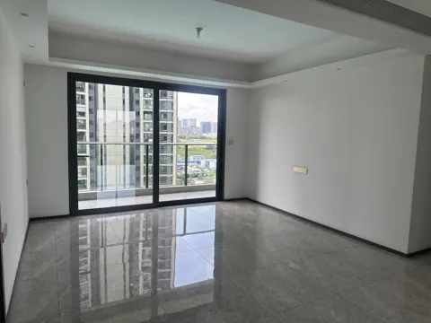
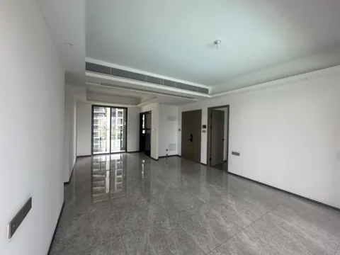
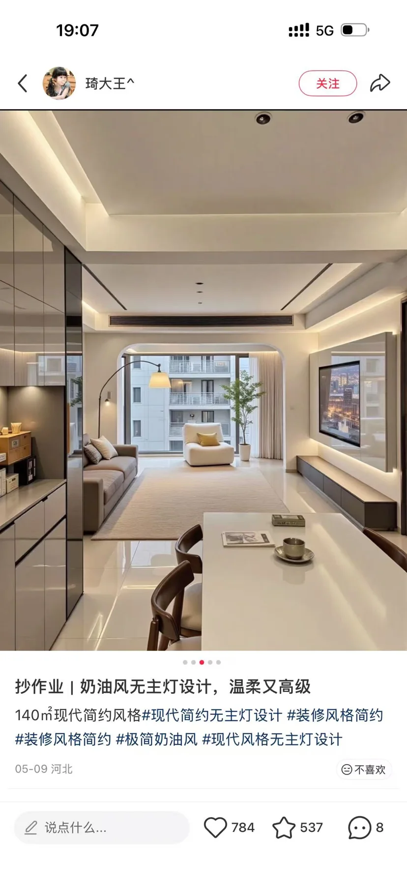
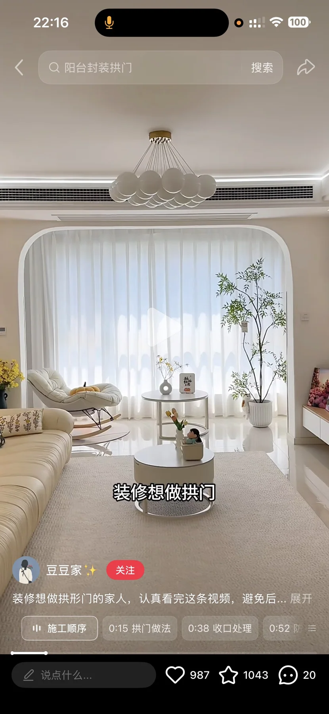
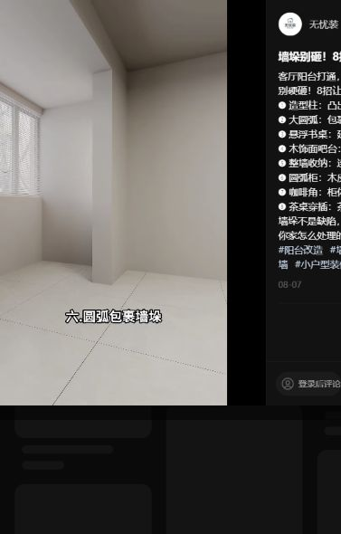
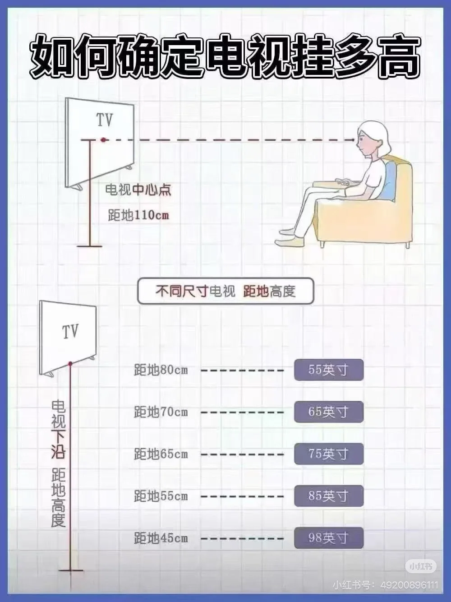
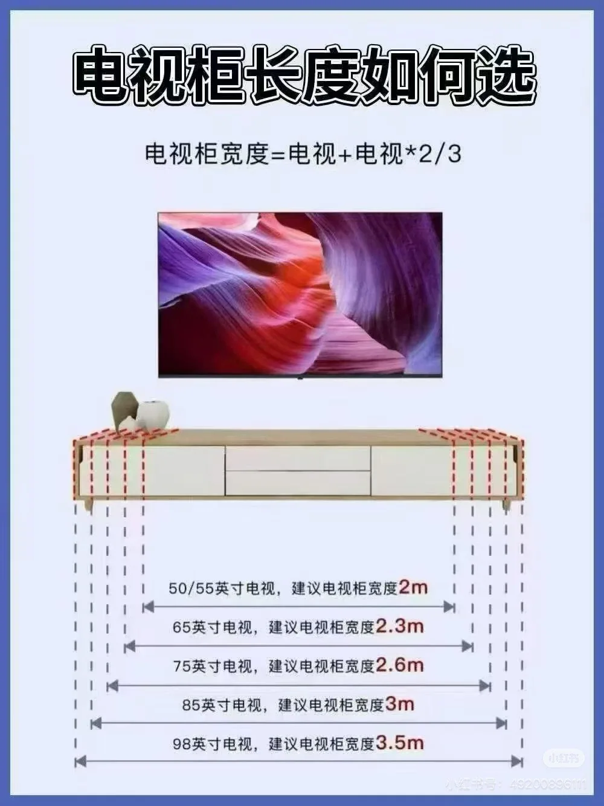
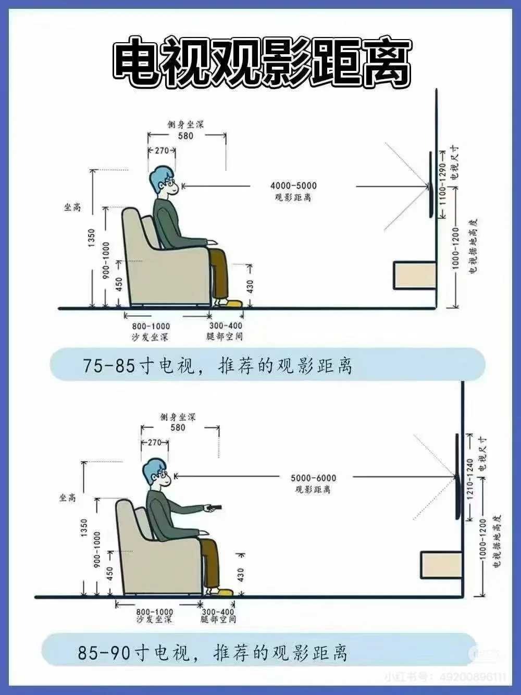

SPACE 01
01 客厅
现状、需求与预期效果，放在一起讨论。
01 客厅装修需求
所有尺寸均为参考；施工、定制、开孔和下单以现场实测、实物安装要求及确认图纸为准。列入配置不等于已经购买。
现场实拍

望向电视墙方向（西南）

望向沙发墙方向（东北）
DESIGN INTENT
预期效果
仅展示需求文档中列出的效果图。
AI 照片级效果以 3ds Max 的空间与家具布局为依据，灯光、织物与小摆件用于氛围示意；实物配置以本页需求及设备清单为准。


功能与布局
- 风格定位：现代简约黑白灰，与餐厅、阳台及主次卧保持主格调一致。
- 与餐厅形成连通大横厅，与大阳台打通；电动沙发床面向电视墙。
- 电视挂在整块浅灰背板前，背板及下方落地电视柜从柱边延伸，连廊转角前统一退让约 300 mm 白墙；背板凸出墙面，外围灯带藏在背部，向原墙面形成柔和暖光晕，正面不做白色套框。落地柜背部贴墙，参考《电视墙参考.jpg》，具体尺寸现场复尺。
- 客厅两棵落地绿植不纳入当前布置。
- 懒人沙发位于靠阳台侧、朝向电视墙；东南角设置 Labubu 展示柜，客厅不配置茶几。
硬装与定制
- 瓷砖美缝：纳入全屋美缝施工；勾除原缝填充物，清理干燥后重新做美缝，检查空鼓、崩边及缝宽并保护原砖。干区意向采用真瓷胶，具体品牌、系列、型号、材料体系、颜色及单价由装修公司提交，打样确认后施工；统一执行全屋干湿区选材要求。
- 实施范围与柜体原则：电视墙及落地电视柜由装修公司深化施工；电视柜现场复尺定制、落地自承重，不做悬挂柜。沙发、躺椅、展示柜及电器等成品软装由业主自购进场。
- 拆除与阳台之间的拉门，保留墙垛和承重柱，利用柱子分区；门洞拐角做拱形收口。
- 阳台采用下部固定玻璃、上部平拉窗及可卷动伸缩纱窗，详见大阳台需求。
- 电视背景墙：整块浅灰背板，无正面白色边框；背后外围暗藏暖色灯带，电视挂在背板前。背板与落地柜横向从柱边起，连廊端统一留约 300 mm 空白墙面，不顶到转角；模型有效宽约 3383 mm，实际复尺收口；电视安装高度按现场坐姿视线确认，挂架进深随背板厚度调整。落地柜背部贴墙，装饰层、挂架受力、散热与驱动检修由装修公司深化。
- 电视柜深灰与白色搭配，纹理按实拍，抽屉关闭时外观完整；预留走线孔、插头和维护空间，柜体中间需可拉出顶板，方便插线。
- 电视尺寸与安装：85 寸、100 寸均为候选，不预先固定尺寸。由装修公司实测沙发正常坐姿及躺姿的眼睛至屏幕距离、电视墙有效尺寸，结合观看习惯提出建议，经业主确认后选型；模型和参考图中的 100 寸电视仅作示意。电视挂架、安装高度、暗管出口与柜后插座按最终型号共同定位。选型须核对包装及整机的电梯、楼道、入户门搬运路径，满足封阳台后的正常搬入、搬出和更换条件。
- 电动沙发床收起和展开两种状态均需核对，不配置茶几，通道留出伸展和操作空间。
家具与设备
“否”按成品选购；“待确认”不代表已决定定制。尺寸以现场实测及最终确认图纸为准。
商品图、规格图及购买链接均为选型参考，不限定购买渠道或最终款式。若有同款且性价比更高的选择、风格更合适的家具，或因现场尺寸、安装条件等客观原因需要调整，可提出替代方案，说明差异及更换原因，经业主确认同意后方可更换。
| 项目 | 数量 | 是否定制 | 参考尺寸 / 选型要求 | 商品图 / 规格参考 | 购买链接（参考） | 备注 |
|---|---|---|---|---|---|---|
| 挂墙电视 | 1 台 | 否 | 85 寸或 100 寸待定，由装修公司实测视距、电视墙及搬运条件后提出建议，业主确认；海信 X Mini 为选型参考 | 实拍、规格 | 京东 | 现有 Vidda 100 寸参考图不代表最终尺寸或品牌；机身、挂架、散热留空及安装尺寸按最终型号核对，封阳台后仍须可正常搬入搬出 |
| 落地电视柜 | 1 个 | 是 | 参考宽约 3383 × 深 300 × 高 370 mm，连廊端留白约 300 mm，现场复尺定制；深灰与白色 | 实拍、规格 | 淘宝 | 中间柜顶部留孔，顶板抽拉式；图示超过 2400 mm 为拼接结构 |
| 电动沙发床 | 1 张 | 否 | 全拆洗布艺电动沙发；参考宽 2610、收起 / 展开深 1230 / 1580、高 970 mm；靠枕高 530 mm、靠背角度 105°；黑灰色，优先耐宠物抓面料 | 实拍、规格 | 淘宝 | 所列尺寸为图示参考，材质、颜色和最终尺寸按所选实物确认 |
| 懒人沙发 | 1 件 | 否 | 电动按摩懒人沙发（云朵款）；图示宽 1060 × 深 1090 mm；黑灰色，优先耐宠物抓面料 | 实拍、规格 | 淘宝 | 位于靠阳台一侧，朝向电视墙；核对展开后通行空间；高度及最终型号待确认 |
| 透明悬浮歌词音箱 | 1 台 | 否 | 参考型号 211MSP01；525 × 140 × 322 mm，10 kg；21.5 英寸，1920 × 1080；电源 24 V / 2.5 A | 实拍、规格 | 淘宝 | 先不买，考虑放电视柜 |
| 电子壁画 / 歌词屏 | 3 台 | 否 | 参考型号 211LSP03；640 × 491 × 52 mm，7.96 kg；1421 × 1898；输入 100～240 V AC、1.5 A Max | 实拍、规格 | 淘宝 | 挂沙发上方，各自供电；供电方式和数量待确认，先不买 |
| 转角双面钟 | 1 台 | 否 | 普赛克（Pusaike）；单面宽 230 × 高 450 mm，摆锤长 200 mm | 实拍、规格 | 淘宝 | 5 号电池供电，不需市电插座；图示尺寸不是含摆锤的安装总高 |
| PS5 | 1 台 | 否 | Sony PlayStation 5；型号待选，摆位模型暂用 Slim 光驱版，官方参考尺寸 358 × 96 × 216 mm（横放宽 × 高 × 深，不含突出部分）；竖放约宽 96 × 深 216 × 高 358 mm，支架另计 | 规格、屏幕示意 | 先不买 | 放客厅电视柜上，HDMI 接电视玩；保留散热、插拔及走线空间 |
| 绿植 | 2 盆 | 否 | 参考造型鸭脚木，高 1300～1600 mm，白色陶瓷盆 | 实拍、规格 | 淘宝 | 先不买。模型选款为鸭脚木，可更换 |
| Labubu 展示柜 | 1 个 | 待选型 | 黑色边框拱顶展示柜；除边框外均为透明亚克力板，360° 展示；暖光；模型暂按 600 × 450 × 2030 mm | 参考 | 待选 | 客厅东南角；黑框拱顶；门板、侧板、背板、弧形顶板和层板均为透明亚克力，不设实心遮挡板；板厚及承重按产品规格核对；暖光，摆件造型参考王冠披风、宇航员与小尺寸收藏款，不另列设备 |
| 客厅主灯 | 1 组 | 否 | 尺寸、款式及灯具数量待选 | 待选 / 暂无资料 | 待软装确认 | 配合软装效果搭配；供电已纳入本区域基础照明，不重复计数 |
| 萤石室内摄像头 | 1 台 | 否 | 客厅东南角吊装；具体型号、外形尺寸及镜头参数待确认 | 实拍 | 淘宝 | 用于宠物监控，需吊装，客餐厅西北和东南的高位都有预留电位 |


水电
用电设备
- 基础照明方案待定。
- 与阳台相接位置不设置窗帘，看现场情况判断是否另做内侧帘。
- 电动沙发床暂按 1 个独立供电接口预留，最终按实物电源数量核定；插头与电线避开伸缩机构，展开时不挤压线缆。
- 东南角展示柜照明预留一份电源；懒人沙发电源设于靠阳台侧使用位。
- 音箱、三幅电子壁画分别考虑供电。
插座、用电设备和开关统一列在下表；同一设备的供电只计一次。用电设备采用插座还是直接接线随最终选型确定，安装高度写在位置要求中；开关按面板位置计数，不按按键数计。数量包含暂定项，现有可复用位置现场核对。
| 类别 | 设备 / 用途 | 数量 | 位置 / 要求 | 状态 |
|---|---|---|---|---|
| 插座 | 电动沙发床 | 1 个 | 按实物供电接口核对 | 配置 |
| 插座 | 挂墙电视（85 / 100 寸待定） | 1 个 | 电视供电；通过本房间 AP 联网，位置按最终型号确认 | 配置 |
| 插座 | 透明歌词音箱 | 1 个 | 电视柜上预留供电 | 先不买，预留 |
| 插座 | 电子壁画 | 3 个 | 暂按 3 台各自供电，最终数量和供电方式随选型核对 | 先不买，预留 |
| 插座 | Labubu 展示柜照明 | 1 个 | 东南角，驱动可检修 | 预留 |
| 插座 | 电动按摩懒人沙发 | 1 个 | 预留独立电源，避开活动机构；接口按最终型号核对 | 配置 |
| 插座 | PS5 | 1 个 | 电视柜附近独立供电，HDMI 接电视；手柄可由主机 USB 充电，不另重复计插座 | 先不买，预留 |
| 插座 | 萤石摄像头 | 1 个 | 客厅东南角吊装处预留适配器电源，接口与安装高度按选型确认 | 需求 |
| 用电设备 | 客厅 · 基础照明 | 1 组 | 门口与沙发边均可控制；灯具数量及控制方式待设计。 | 暂定 |
| 用电设备 | 电视背景墙灯带 | 1 组 | 隐藏暖光，驱动可检修，控制方式随照明方案深化 | 配置 |
| 开关 | 客厅 · 照明开关 | 2 处 | 门口、沙发边各 1 处 | 数量已由业主确认 |
汇总：插座 10 个，另需供电的设备 2 项，照明开关 2 处。 用电设备后续即使采用插座供电，也不再重复增加同一项需求。
转角双面钟已确认使用 5 号电池，不计交流插座。
用水设备
本区域无固定上下水设备。
待确认事项
| 区域 / 专项 | 待确认内容 | 对设计及报价的影响 |
|---|---|---|
| 客厅与阳台地面 | 通铺平接的基层、防水、排水坡度和完成面高度 | 地面工艺、高差及通行 |
灵感与风格参考


同户型客厅布置风格（电视墙和落地柜）


客厅拱门

客厅阳台打通、墙垛的改造方案


电视悬挂高度选择


电视柜长度选择

